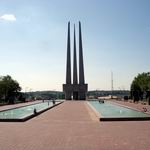

Достопримечательности

Успенская церковь
Успе́нская це́рковь или Успенский собор(Церковь в честь Успения Пресвятой Богородицы) православный храм в городе Витебске, памятник архитектуры. Построена в 1858 году из кирпича; в начале XX века значилась как единоверческая. Закрыта после Октябрьской революциии в годы советской власти была приспособлена под хозяйственные нужды. Действует с 1989 года В апреле 1991 года решением Горисполкома зарегистрирована община Свято-Успенской церкви и передана часть помещений. В 1997 году здание полностью возвращено церкви, частично отреставрировано. Настоятель протоиерей Александр Рахунок. Памятник архитектуры.
Архитектура
Храм в Витебске - памятник архитектуры виленского барокко на Успенской горке . При построении за образец взят храм Сан-Карло-аль-Корсо в Риме. Предполагаемый архитектор И. Фонтана.
Характеризуется прямоугольным в плане объёмом, полукруглой апсидой, двухскатной крышей с вальмой со стороны фронтального фасада и деревянным восьмигранным барабаном с куполом лукоподобной формы. Главный фасад является трёхосевым прямоугольный дверной проём по центру и прямоугольные оконные проёмы в 2 яруса по бокам. Боковые фасады, расчленённые крупными лопатками на 3 прясла, увенчаны профилированным карнизоми разделены на два яруса прямоугольными оконными проёмами.
Внутри плоский потолок разделяет храм на два этажа. На первом из них размещается молитвенный зал, от которого кирпичный простенок отделяет апсиду. Данный простенок, расчленённый прямоугольным центральным входным проёмом и боковыми проёмами с лучковой перемычкой, служит в качестве своеобразного иконостаса с образами; в центральном проёме царские врата. По центру молитвенный зал разделён на две половины двумя столбами и арками, перекинутыми между ними. Второй этаж занимают покои настоятеля.
В данный момент в храме находится мощевик с частицами святых мощей Св. Феофана Затворника, праведник Иоанна Русского, великомученицы Варвары, мученика Мамонта и ещё 30 святых.
Информация для посетителей
Время работы
Находится собор на улице Комиссара Крылова,9
моб. телефон:+375 21 266-28-53

Площадь победы
У каждого города есть свои знаковые объекты. В Витебске это мемориальный комплекс Три штыка, в котором запечатлен бессмертный подвиг народа.Три штыка величественно возвышаются над городом, напоминая горожанам вновь и вновь о прожитых суровых годах и о великой жертве советского народа во имя Победы. Площадь Победы в Витебске самая большая площадь в Беларуси. Её длина 380м, ширина 190м, периметр 1140м, а общая площадь 7,22 га. Сформирована застройкой жилых домов в 1960-1970 годах.
История
Авторами проекта общей планировки и благоустройства площади стали архитекторы А. Данилова, З. Довгялло, Р. Княжище, инженер Л. Эйнгорн. По их замыслу, объект объединил и мемориальный центр, и сложный транспортный узел, и место отдыха горожан.
Самую большую площадь в Белоруссии строили более двух лет. Строительство площади проводилось силами треста №9 с участием рабочих и сотрудников витебских предприятий, учащихся, студентов и школьников. Торжественное открытие состоялось 30 июня 1974 года к празднованию 30-летия освобождения Витебщины от немецко-фашистских захватчиков и 1000-летия Витебска.
Центральное место на площади занял мемориальный комплекс в честь советских воинов-освободителей, партизан и подпольщиков Витебщины или, по-народному, Три штыка (архитектор Ю. Шпит, скульпторы Б. Марков, Я. Печкин). Монумент выполнен в виде трёх обелисков высотой 56 метров, на 6-метровой высоте они объединены рельефно-скульптурным поясом. Внизу горит Вечный огонь. Возле памятника два бассейна с фонтанами. С двух сторон площади по пять пилонов, на них нанесены годы войны. К набережной Двины ведут три большие лестницы.
Информация для посетителей
Отдав дань памяти подвигу советского народа у мемориала Три штыка, неторопливо прогуляйтесь по Площади Победы самой большой белорусской площади. Побродите по Парку Победителей насладитесь убаюкивающим шепотом листвы - и вы почувствуете прилив сил. Возможно, вам даже захочется посетить и другие достопримечательности Витебска, которые находятся недалеко от мемориального комплекса Три штыка. Мемориал находится под открытым небом, и вы можете его посетить в любое время, если там не будут проводиться работы.

Летний амфитеатр
Летний амфитеатр — главная концертная площадка международного фестиваля искусств «Славянский базар в Витебске». Является филиалом ГУ «Центр культуры „Витебск“».
Летний амфитеатр сдан в эксплуатацию в 1988 году. Реконструирован в 2007 году. Возведена крыша и обустроена прилегающая территория. Главный архитектор проекта реконструкции — Александр Зафатаев.
История
В начале XX века на месте Летнего амфитеатра находился цирк Лерри, изображенный на многих картинах учителя М.Шагала — Ю.Пена.
Летний амфитеатр построен в 1988 году по проекту архитектора В. Бабашкина. Первый концерт состоялся в 1988 году — накануне I Всесоюзного фестиваля польской песни. Двухъярусная сцена концертного зала занимала 430 квадратных метров. Козырёк был оснащен 200 прожекторами, не считая другой осветительной аппаратуры. Вместительность концертного комплекса составляла 5 тысяч зрителей.
В августе 2006 года был разработан проект модернизации здания, предусматривающий увеличение числа зрительских мест до 6200 и сооружение крыши над амфитеатром. Главный архитектор проекта реконструкции — Александр Зафатаев. В результате реконструкции были установлены новые удобные места для зрителей, два больших экрана, комфортабельные гримерные для артистов, кабинеты для технического персонала, обновленное звуковое и световое оборудование ведущих компаний из Германии, Франции, Италии, США, разработанное специально для Летнего амфитеатра. Стоимость реконструкции составила почти 35 млрд белорусских рублей.
Фестивали и мероприятия
Информация для посетителей
Моб.телефон:
+375 21 263-62-32
Вахта:
+375 21 235-80-08
+375 21 263-62-64
+375 21 266-08-67
Кассы:
+375 21 235-91-25
+375 21 267-09-44
+375 21 267-09-45
+375 21 242-62-52